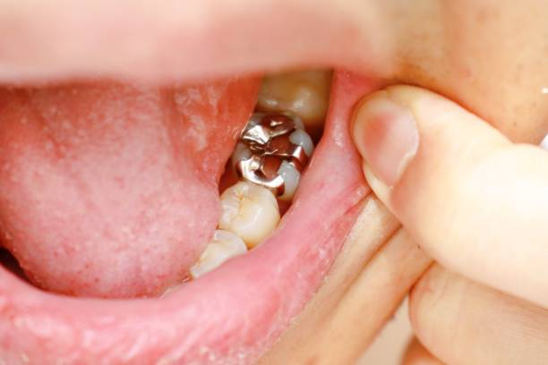
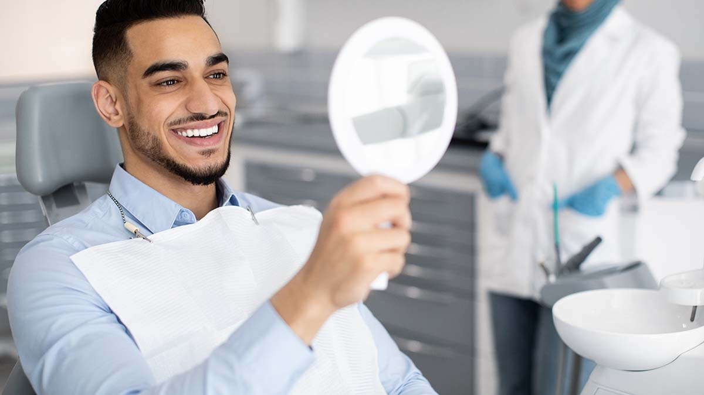
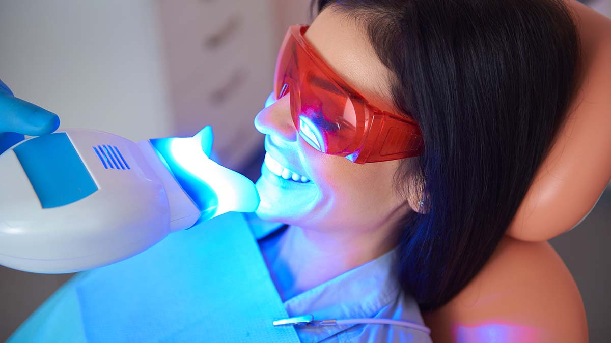
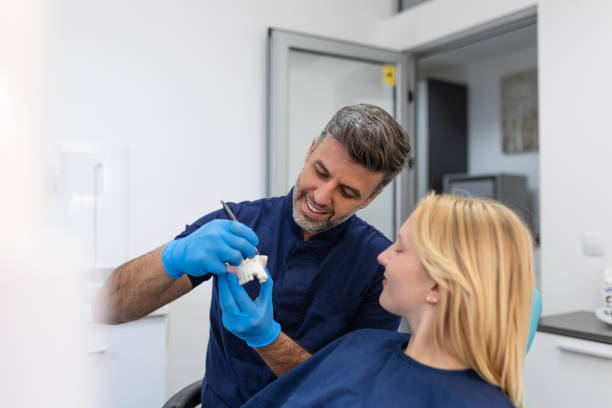
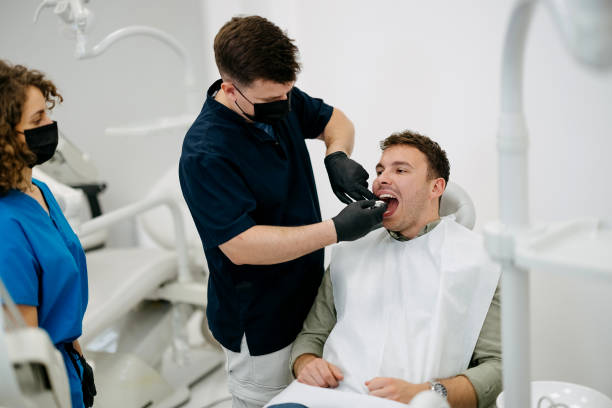
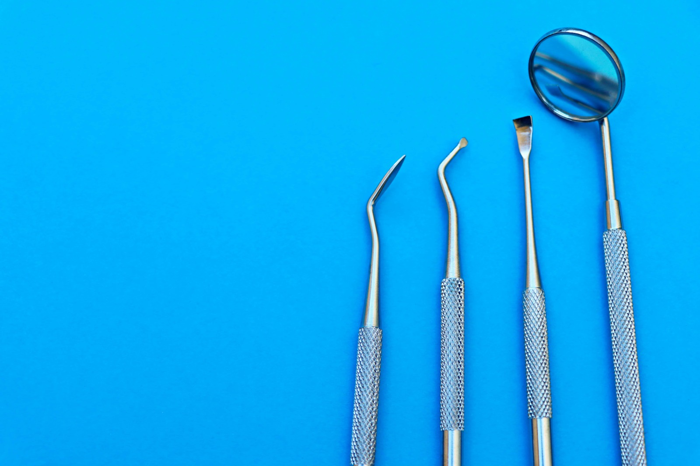
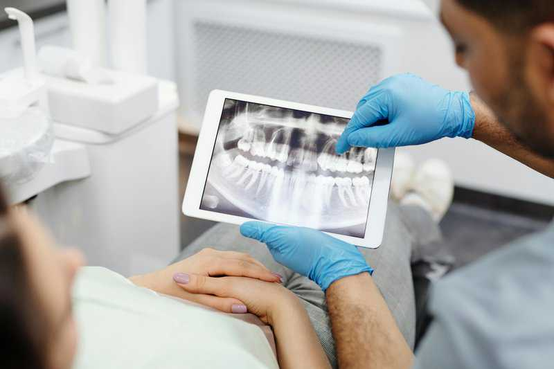
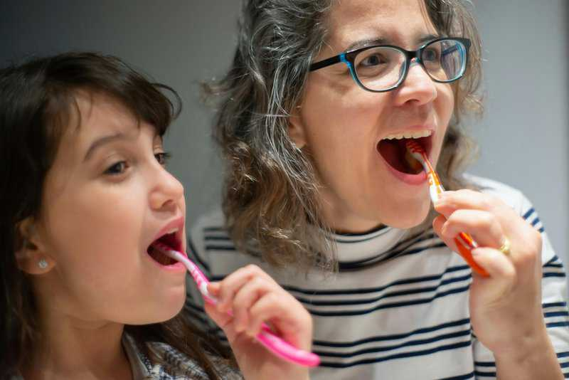
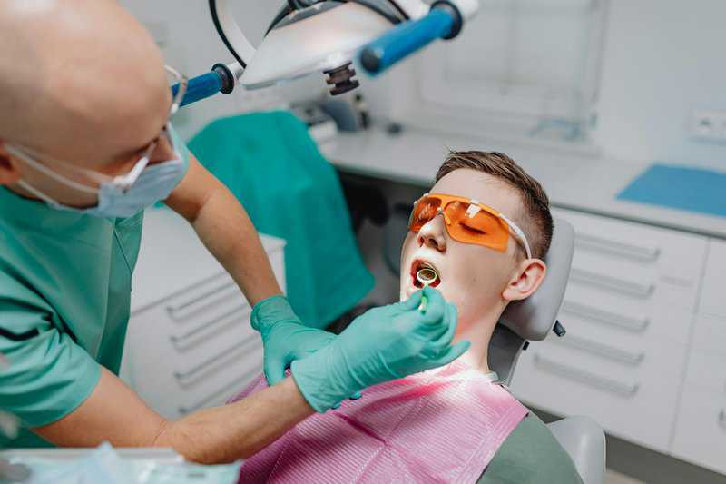
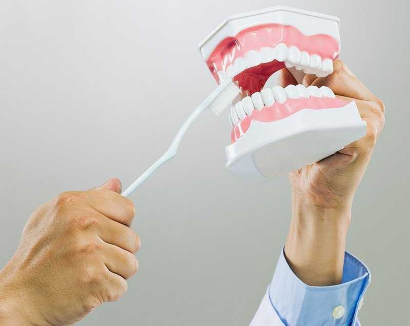

%20(2).png)
Veneers vs. Bonding: South Tampa Expert Comparison
Dental veneers and dental bonding are two of the most popular cosmetic dentistry treatments in South Tampa.
Read MoreDental tips, guides, and news from your South Tampa dentist
Dental veneers and dental bonding are two of the most popular cosmetic dentistry treatments in South Tampa.
Read More
Silver fillings, also known as dental amalgam, are a durable mix of metals used for decades to restore decayed teeth.
Read MoreLearn about the veneer procedure and what patients should expect during treatment at Upshaw Dental Studio.
Read More
Find out if dental veneers are right for you with our comprehensive candidacy guide.
Read More
Explore the different types of veneers available to help you choose the right cosmetic option.
Read MoreLearn about the lifespan and durability of dental bridges as tooth replacement solutions.
Read More
Dental bridges restore your smile by filling in gaps with artificial teeth, anchored by your natural teeth or dental implants.
Read More
Compare two major tooth replacement options regarding lifestyle, oral health, and budget.
Read MoreDetermine denture candidacy and explore restoration options available at Upshaw Dental Studio.
Read MoreDiscover personalized denture solutions including removable and fixed prosthetic options.
Read More
Professional insights on treatment options for periodontal disease symptoms like sensitive gums and bleeding.
Read MoreUnderstanding periodontal disease progression and how early symptom recognition influences treatment.
Read MoreCompare available crown materials to make informed restoration decisions.
Read MoreDental crown cost without insurance typically ranges from $800 to $1,700. Learn about pricing and payment options.
Read More
Professional guidance identifying clear indicators that you may need a dental crown.
Read MoreResearch-based information about crown longevity factors and what affects durability.
Read MoreAnalysis of smart toothbrush technology features and benefits versus costs.
Read MoreHow seasonal mood disorders and antidepressant treatments can trigger oral health side effects.
Read MoreHow proper mouth care connects to immune system strength during cold and flu season.
Read MoreNovember awareness addressing men's oral health alongside broader wellness considerations.
Read More
October marks National Dental Hygiene Month, emphasizing the importance of maintaining oral health.
Read MoreConnections between breast cancer treatments and oral health complications.
Read MoreHow popular dietary trends impact tooth and gum health.
Read MoreHow Alzheimer's progression creates dental hygiene challenges for patients and caregivers.
Read MoreWarning indicators of dental abscesses requiring prompt professional attention.
Read MoreDaily cleaning routines, careful handling, and regular check-ups for denture longevity.
Read MoreHow electrolyte-replacement beverages can affect dental health despite hydration benefits.
Read MoreWhether chocolate consumption harms dental health and guidance on responsible enjoyment.
Read MoreFactors influencing dentist selection for people moving or seeking better dental care.
Read MoreEffective strategies for managing dental discomfort and when to seek professional help.
Read MoreAdult options for teeth straightening and cosmetic dental solutions.
Read MoreHow dietary choices impact dental health and a holistic approach to oral wellness.
Read MoreLongevity of teeth whitening treatments through professional and at-home methods.
Read MoreUnderstanding xerostomia, its complications, and available treatment options.
Read More
Restoration longevity and cavity treatment options in South Tampa.
Read MoreConnections between dental issues and sleep apnea, with alternatives to CPAP therapy.
Read More
The proper sequence for your oral hygiene routine for optimal dental health.
Read MoreRecognizing Toothache Day with awareness about tooth pain causes and management.
Read MoreReady to take the next step toward a healthier smile? Contact Upshaw Dental Studio in South Tampa today.
Contact Us